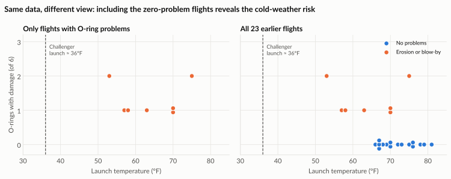

Storytelling with data¶
A correct analysis that nobody understands changes nothing. Storytelling with data means shaping evidence into a clear message, for a specific audience, that leads to a decision.
The Challenger disaster: right data, wrong presentation¶
On 28 January 1986, the space shuttle Challenger broke apart 73 seconds after launch, killing all seven crew. The investigation found that rubber O-ring seals in a booster rocket had failed. They had become stiff in the unusually cold weather: the air temperature at launch was about 36°F (2°C), far colder than any previous launch.
The night before, engineers at the contractor Morton Thiokol were worried. They had data on O-ring damage from earlier flights and recommended not launching below 53°F, the coldest temperature previously flown. In a tense teleconference, their recommendation was challenged, managers reversed it, and the launch went ahead.
What did the data show?¶
Discussion that night focused on flights where O-rings had been damaged, the view later highlighted by the Rogers Commission investigation. Looked at alone, those flights do not show an obvious temperature pattern: damage appeared at both cool and warm temperatures.
The picture changes completely when you include the flights with no damage:

| What you see | Only damaged flights | All 23 flights |
|---|---|---|
| Pattern with temperature | Unclear | Every flight below 65°F had O-ring damage |
| Launches near 36°F | None | None. Challenger was far outside all experience |
Every launch below 65°F had damage. Most warm launches had none. And Challenger would launch more than 15 degrees colder than anything ever tried.
Two views of the lesson
Edward Tufte argued in Visual Explanations (1997) that the engineers' charts failed to show this relationship clearly. Others have pointed out that the engineers did raise temperature as the key concern, and that the decision was also shaped by schedule and organisational pressure. Both views lead to the same lesson for analysts: when the stakes are high, the evidence must be presented so the risk is impossible to miss.
Data source
O-ring data for the 23 flights before Challenger: UCI Machine Learning Repository, Challenger USA Space Shuttle O-Ring dataset (erosion or blow-by version), based on Draper (1995) and Dalal, Fowlkes and Hoadley (1989).
What makes a data story¶
The ideas in this section draw on Cole Nussbaumer Knaflic's book Storytelling with Data (2015), paraphrased for this course.
A data story is not a decorated chart. It has three parts:
- Context: who is the audience, what do they already know, and what decision do they face?
- Evidence: the few charts and numbers that matter, checked and clearly drawn.
- Action: what you recommend, what is uncertain, and how success will be measured.
Start with the "big idea"¶
Before building any chart, write your main message in one sentence that:
- states your point of view,
- says what is at stake,
- and is written for your audience.
Example: "Delivery delays in the North region are costing us repeat customers, so we should trial a second carrier there next quarter before the peak season."
If you cannot write that sentence, you are not ready to build the presentation.
A simple process¶
- Know your audience. A finance director and a warehouse team need different levels of detail.
- Write the big idea in one sentence.
- Choose the right chart for each point (see Types of analysis).
- Remove clutter (see Designing clear visuals).
- Direct attention with one colour, a clear title and a short annotation.
- Build the flow: situation, complication, resolution. What is happening, why it is a problem, what we should do.
- Test it on someone who has not seen it. Can they repeat your message in one sentence?
Titles that tell
Replace descriptive titles with message titles.
- Instead of "Monthly sales by region"
- write "North region sales have fallen for three months while all others grew."
Exploratory versus explanatory¶
| Exploratory | Explanatory | |
|---|---|---|
| Purpose | Find out what is in the data | Tell others what you found |
| Audience | You | Decision-makers |
| Number of charts | Many | As few as possible |
| Style | Rough, quick | Clean, titled, annotated |
Most of your time in analysis is exploratory. Only the few findings that matter make it into the explanatory story.
Try it yourself¶
Exercise 1: rescue the Challenger chart
Look at the left-hand Challenger chart. Write a one-sentence title for the right-hand chart that a manager could not misunderstand.
Exercise 2: write a big idea
Choose a recent finding from your own work, or from any chart on these Foundations pages. Write a big-idea sentence with a point of view, the stakes and the audience.
Exercise 3: three slides, one story
Plan a three-slide story about the ice cream and crime example on How statistics can mislead:
- Situation: what the raw correlation seems to say.
- Complication: what it hides.
- Resolution: what a decision-maker should do instead.
Exercise 4: the one-sentence test
Show any chart you have made to a colleague for ten seconds. Ask them what it says. If their answer differs from your intended message, revise the title, the highlight or the chart type.